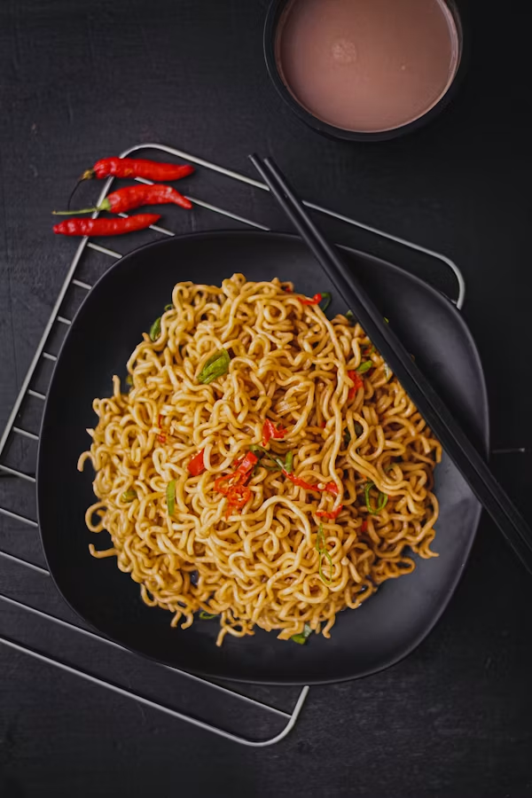

Home
Recipe for Noodles

Description
Noodles are a type of pasta made from unleavened dough,
typically served in a soup or with a sauce.
They are a staple food in many cultures and can be prepared in various ways, from fresh to dried,
and in different shapes and sizes.
Ingredients
- Noodle sheets (fresh or dried)
- Vegetable oil
- Onion
- Garlic
- Tomato paste
- Crushed tomatoes or tomato sauce
- Black pepper
- Dried oregano
- Dried basil
- Soy sauce
- Vinegar
- Sugar
Procedures
-
Prepare the sauce
- Heat vegetable oil in a large pan over medium heat.
- Sauté the chopped onion and garlic until softened.
- Stir in the tomato paste, crushed tomatoes, and seasonings (salt, pepper, oregano, basil).
- Add soy sauce, vinegar, and sugar to taste.
- Simmer for 15–20 minutes until the sauce thickens.
-
Cook the noodles
- Boil water in a large pot and cook the noodle sheets according to package instructions.
- Drain and rinse the noodles under cold water to stop the cooking process.
-
Combine and serve
- Toss the cooked noodles with the prepared sauce until well coated.
- Serve hot, garnished with fresh herbs or grated cheese if desired.